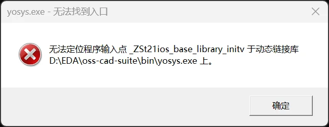
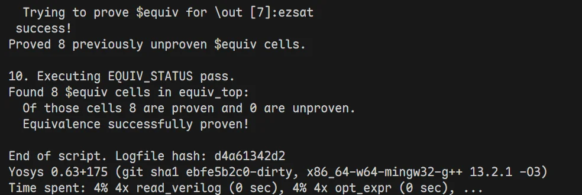
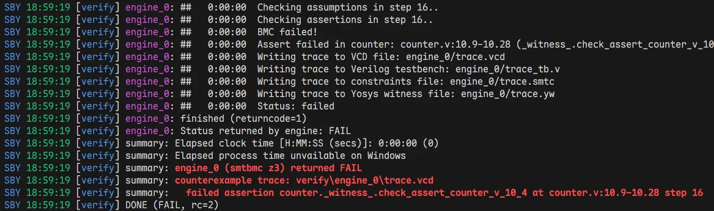

Windows 原生环境开源EDA工具链构建
WSL2子系统开发笔记中提到了如何在 WSL2 中配置 yosys + symbiyosys 等开源 EDA 工具链的详细步骤。但是这种方法依赖 WSL2，饱受文件跨系统 I/O 极慢、环境配置繁琐之苦、而且开发时还需要远程连接 WSL2，频繁在 Windows 和 Linux 之间切换，极大降低效率。
本指南将搭建一个纯 Windows 原生、零 DLL 冲突、完美融合 Python 验证生态 (Cocotb/Pyverilog) 与顶级开源 EDA 引擎 (Yosys/SBY/Z3) 的开发环境。
🛠️ 包含的工具链
* 综合与形式验证引擎：Yosys, SymbiYosys (SBY), Z3, Boolector
* 仿真与波形查看：Icarus Verilog (iverilog), vvp, GTKWave
* Python 高级验证生态：Anaconda, Cocotb, Pyverilog
I. 部署 OSS CAD Suite
OSS CAD Suite 包含了所有我们需要的底层 EDA 引擎的 Windows 预编译版。
1.1 下载与解压
访问 YosysHQ/oss-cad-suite-build Releases，下载最新的 windows-x64 压缩包或者.exe，大概300-400MB左右。
下载好之后，将其解压到一个完全没有中文字符和空格的路径下（例如 D:\EDA\oss-cad-suite）。
1.2 环境变量配置
1.2.1 全局配置法
打开 OSS CAD Suite 安装解压后的文件夹，找到其中的
- bin
- lin
目录，比如：
- D:\EDA\oss-cad-suite\bin
- D:\EDA\oss-cad-suite\lib
复制路径，添加进入系统环境变量的 Path 中。
之后，新开一个 powershell 或者 cmd 窗口，输入：
如果能够正确显示版本号，则代表环境配置成功了。
⚠️注意：
有可能输入yosys -V 后，系统弹出一个弹窗：

显示动态链接库相关的错误。这是因为你之前电脑里装过的某些软件（如 Git、Anaconda）也带了一个老版本的 libstdc++-6.dll，而且它们的路径在系统环境变量里优先级比 OSS CAD Suite 的路径更高，导致 Yosys 启动时误加载了那个老版本的 DLL，从而崩溃。
Warning
在系统环境变量PATH中，将 D:\EDA\oss-cad-suite\bin 和 D:\EDA\oss-cad-suite\lib 的优先级调到最前面，确保它们在任何其他软件的路径之前。这样系统就会优先加载 OSS CAD Suite 自带的最新版 DLL，解决冲突问题。
但是这样做后，其实是有潜在风险的，把 OSS CAD Suite 的 lib 提到了全局最高优先级，意味计算机上以后任何软件（只要它没有把自己的 DLL 放在和 .exe 同一个目录下），在需要调用 C++ 库时，都会被迫使用 OSS CAD Suite 提供的这个 libstdc++-6.dll。
虽然 C++ 的标准库通常是向下兼容的，但是保不齐哪天某个就软件遇到了“编译器底层异常处理模型不匹配”就会瞬间无提示闪退，这也是极其不推荐把包含通用 DLL 的 lib 文件夹放到系统全局变量最顶端的原因。
1.2.2 推荐的“环境融合”配置法
✅ 安全做法：全局环境变量中什么都不加，我们利用 VS Code 的集成终端配置功能隔离这些环境。详见第III节
II. 安装专用于 EDA 生态的 Python 环境
Python 生态如今在芯片设计与验证领域非常火热，虽然底层往往还是调用 C/C++ 编写的求解器（如 Z3），但 Python 提供了极佳的 API 和易用性。
首先利用 Anaconda 或者 Miniconda 创建一个新的 Python 虚拟环境（例如命名为 rtl），Python 版本推荐3.10或者3.11：
然后进入该环境，安装如下 Python 包：
该 Python 环境专用于芯片设计验证，虽然安装了这些包，但是它们底层还是调用的 OSS CAD Suite 里的求解器和仿真器。
至此，如果在第 I. 步中，我们选择了全局配置法，接下来可以直接跳过第 III 节，去第 IV. 节测试环境了；如果我们选择了推荐的“环境融合”配置法，请继续往下看第 III 节，完成 VS Code 终端的环境融合配置。
III. 在 VS Code 中配置“环境融合”终端
我们希望在开发时，既能使用 Anaconda 的 Python 环境，又能调用 OSS 的 EDA 工具，且两者互不干扰。而且我们又不想把 Andaconda 环境和 OSS EDA 环境添加进入系统环境变量污染系统环境，这个时候，VS Code 的集成终端配置功能可以帮助我们搞定一切，完美隔离所有环境！
3.1 配置 settings.json
VS Code中，在 settings.json 中找到 "terminal.integrated.profiles.windows"，追加以下配置：
"terminal.integrated.profiles.windows": {
"EDA": {
"source": "PowerShell",
"icon": "chip",
"args":[
"-NoExit",
"-Command",
"& 'D:\\Anaconda\\shell\\condabin\\conda-hook.ps1'; conda activate rtl; Write-Host '✅ Conda rtl 环境激活成功' -ForegroundColor Green; $env:PATH = 'D:\\EDA\\oss-cad-suite\\bin;D:\\EDA\\oss-cad-suite\\lib;' + $env:PATH; Write-Host '✅ Conda 和 OSS CAD 环境已融合就绪！' -ForegroundColor Green"
]
}
}
参数修改提示：
- 请将 D:\\Anaconda\\shell\\condabin\\conda-hook.ps1 替换为电脑上实际的 Anaconda 路径。
- conda activate rtl 中的 rtl 是我们第 II. 节创建的 Conda 虚拟环境名。
- 请将 D:\\EDA\\oss-cad-suite... 替换为你实际解压的路径。
3.2 验证配置
使用方法：在 VS Code 终端面板点击右上角 + 号旁边的下拉箭头，选择 "EDA"。你将看到两条绿色的成功提示。
验证环境是否就绪：
在此终端中输入以下命令：
* yosys -V (输出版本号，且无弹窗报错)
* iverilog -V (输出详细版本信息)
* python -V (输出 Anaconda 的 Python 版本)
至此，我们就完成了EDA环境的融合以及与全局环境的完美隔离！在上述几条简单的配置命令中，我们实现了的包括：
1. conda 环境与全局环境的隔离
2. OSS 生态工具与全局环境的隔离：也就是说，如果之前还安装了原生的iverilog, vvp, gtkwave工具，并且添加进入了环境变量，它们是不会受到任何影响的，依旧可以像之前一样使用，绝对干净！）
3. rtl 环境与 OSS 生态工具的融合：在这个专用终端里，既可以使用 conda 环境的 python 调用 cocotb 和 pyverilog，又可以直接调用 yosys, sby, z3 等工具
IV. 环境功能测试与实战例程
为了确保我们的环境完美工作，我们可以跑两个经典的验证实验。以下操作均在 rtl 环境中进行。
4.1 实验 A：等价性检查 (LEC) - 测试 Yosys 内置 SAT 引擎
证明“直接相加”和“使用结合律相加”的两个模块在所有输入组合下绝对等价。
- 创建
gold.v(参考模型)：
- 创建
gate.v(修改后的模型)：
- 创建
lec.ys(Yosys 脚本)：
- 运行：
yosys -s lec.ys。
预期结果：输出Successfully proved 8 equivalences...（证明成功）。

4.2 实验 B：有界模型检查 (BMC) - 测试 SBY 与 Z3 求解器
用形式验证去寻找计数器代码里的“漏洞”。
- 创建
counter.v：
- 创建
verify.sby：
- 运行：
sby -f verify.sby。
预期结果：输出红色的DONE (FAIL, rc=2)。

V. Appendix: 常见避坑指南 (FAQ)
5.1 运行 SBY 时报错 UnicodeDecodeError: 'gbk' codec can't decode...？
A1：Windows 的 Python 默认用 GBK 读取文件，而 VS Code 默认生成 UTF-8。请绝对不要在任何输入给 SBY 的文件（如 .v, .sby）中写中文字符或中文注释。删掉中文即可秒解。
5.2: 之前装在系统的全局 iverilog 或 gtkwave 还能用吗？
A3：完全可以！ 这个方案的绝妙之处在于：在普通的终端里，系统依然调用你以前的全局工具；而在 VS Code 的 "EDA" 专用终端里，由于我们在脚本里使用了 $env:PATH = 'D:\...\bin;' + $env:PATH，OSS 套件被插到了最前面，它会安全地遮蔽（Shadow）掉系统的旧工具。井水不犯河水！